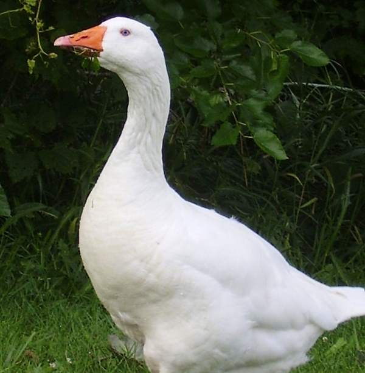
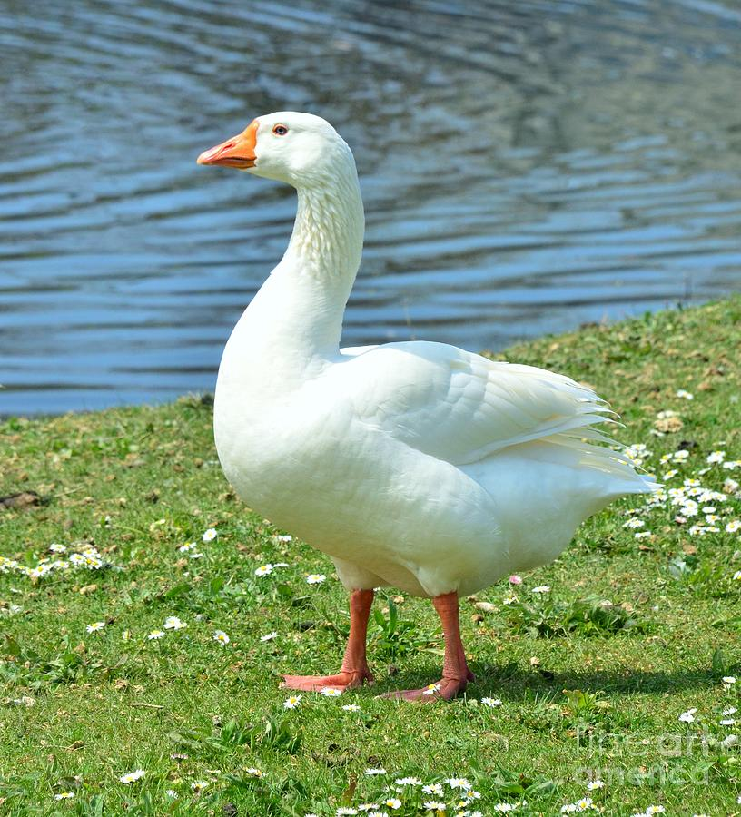
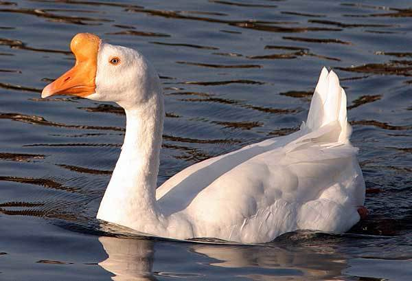
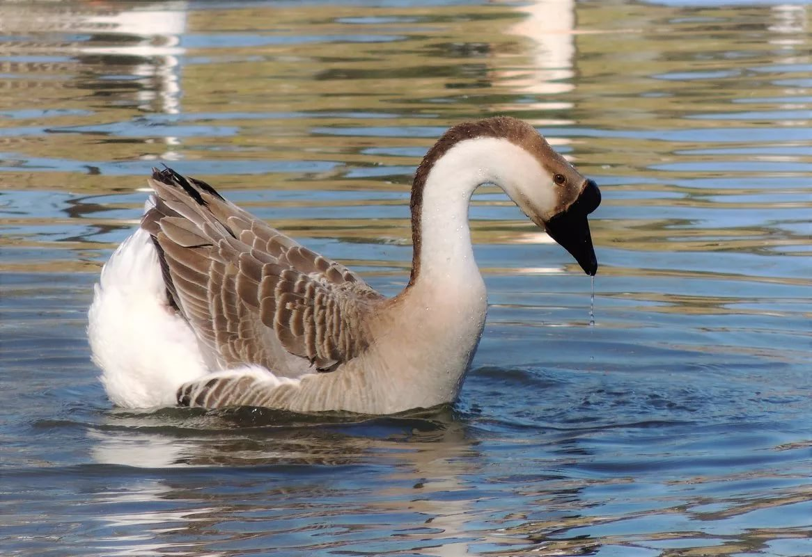
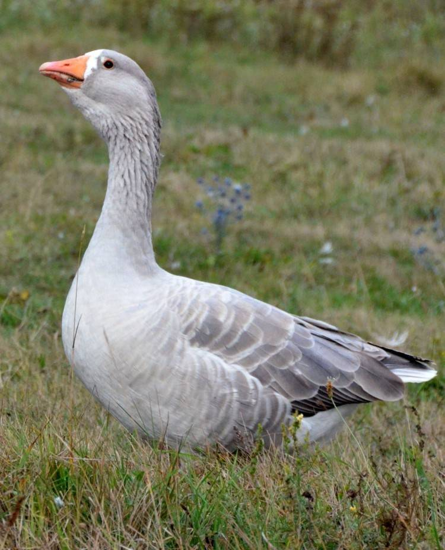
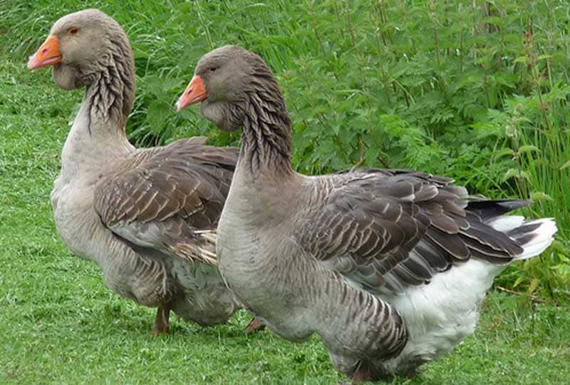
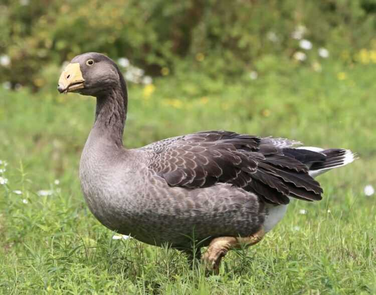
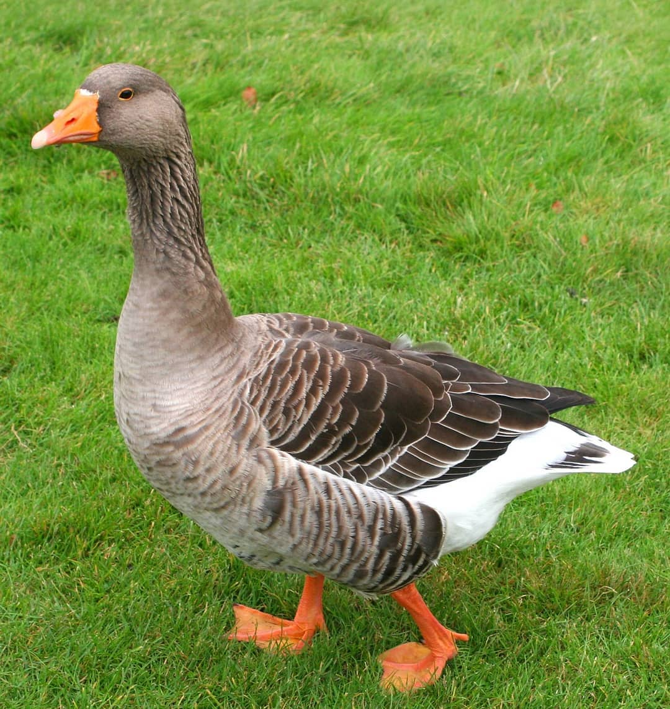
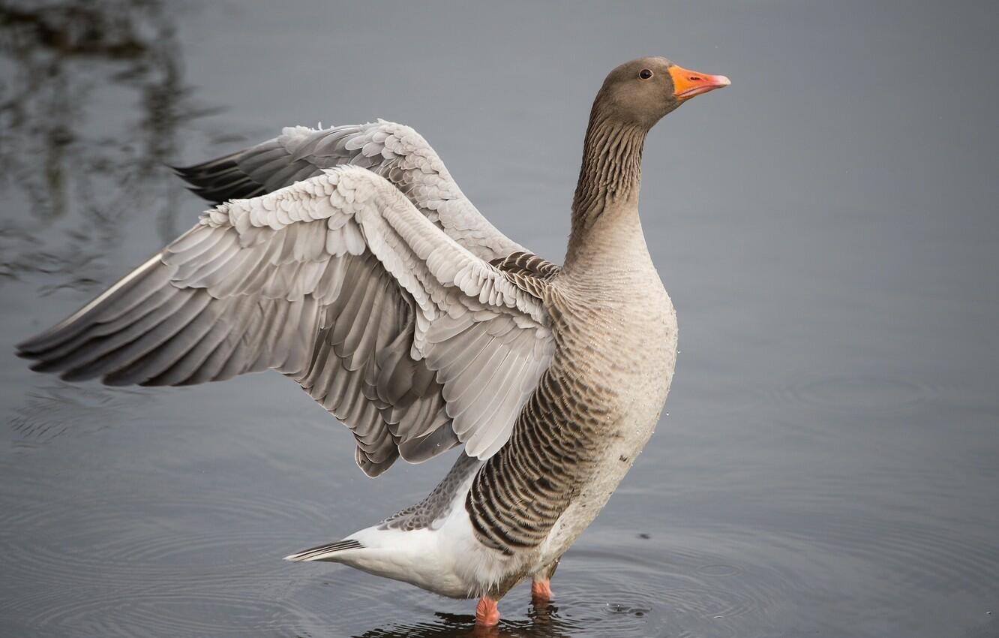

Виды гусей!
Адлерский гусь
Порода получена скрещиванием серых гусей с их более крупными родственниками.
Оперение у птиц чистого белого цвета. Вес у самцов достигает 7 кг, у самок – до 6,5 кг. Гусь дает от 25 до 30 яиц в год.

Венгерский гусь
Венгерку откармливают специальными кормами для получения печени весом около 0,5 кг.
Самцы в среднем весят 7 кг, самки – 5-6 кг. Яйценосность составляет от 45 до 55 яиц за год.
Итальянский гусь
Порода была выведена для получения печени. Оперение у гуся белого цвета. Голова не очень крупная без нароста и складки под клювом. Ноги и клюв – оранжевые. Шея короткая.
Вес у мужских особей от 6 до 7 кг, у женских – 5-6 кг. Гуси дают до 50 яиц за год.
Китайский белый гусь
Преимущественно мясная порода, широко распространённая на территории России. Окрас белый или серо-бурый с белыми перышками. На голове и шее у бурых особей видна черная полоса. Туловище яйцевидное с круглой грудью и длинной шеей. Голова крупная с шишкой на лбу, которая у самцов больше, чем у самок. Лапы и клюв оранжевые.
Масса самцов около 5 кг, самок – 4 кг. Несут от 50 до 70 яиц в год.
Кубанский гусь
Туловище у породы средней длины, по форме напоминает яйцо с округлой грудкой. Голова длинная, крупная с заметной шишкой на лбу. Шея длинная, изогнутая. Окрас кубанского гуся буровато-серый с коричневой полосой на шее и голове. Ноги, клюв и шишка черного цвета.
Птица дает до 85 яиц в год. Вес самцов около 5,5 кг, самок – до 5 кг.
Псковский лысый гусь
Издревле порода известна в России как мясная птица. Окрас оперения светло-серый с белой каймой по плечам, крыльям, голеням, хвосту. Брюхо и подхвостье белого цвета. Голова крупная с коротким клювом и большими темными глазами. Шея толстая и короткая с темной полоской. Лапы и клюв оранжевого цвета.
Масса самцов в среднем 7 кг, самок – 6 кг.
Тулузский гусь
Французская крупная порода с темно-серым оперением. Туловище массивное, шея толстая. Гуси хорошо откармливаются за счет своей малоподвижности.
Масса самцов достигает 10 кг, самок – 8 кг. Гусыни дают от 30 до 40 яиц.
Тульский бойцовый гусь
Оперение возможно коричневое, серое или белое с желтыми пестринами. Голова большая с широким лбом и крупным прямым клювом белого цвета. Шея короткая, толстая. Ноги короткие бежевые.
Масса гусаков – до 9 кг, гусынь – около 6 кг. Яйценосность: 10-30 яиц в год.
Ландский гусь
Порода была выведена во Франции, откуда распространилась в Европу и Азию. Окрас оперения серый на спине и белый на брюхе. Крылья и спина украшены чешуйчатым рисунком. Лапы и клюв – оранжевые. Иногда бывает выражен шишкообразный нарост над клювом.
Вес самок до 7 кг, самцов – около 8 кг.
Крупный серый гусь
Порода окрашена в тёмно-серый цвет в области головы и верхней части спины и шеи; в светло-серый на грудке и в белый цвет на брюхе. На короткой и толстой шее короткая голова. Клюв крупный, прямой, оранжево-красного цвета с белым кончиком. Тело среднее по длине с прямой спиной и короткими лапками.
Масса самцов – до 7 кг, самок – до 6 кг. Дают 35 – 60 яиц за год.
